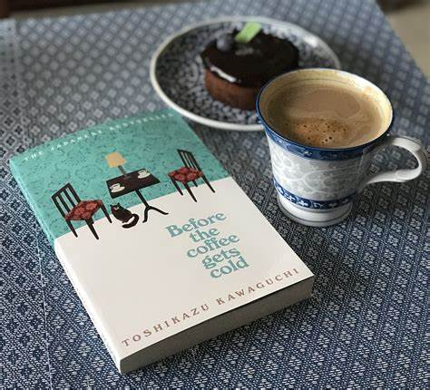

Before the Coffe Gets Cold
Toshikazu Kawaguchi
Sobre el autor
Toshikazu Kawaguchi (en japonés: 川口 俊 和) nació en Osaka, Japón, en 1971. Anteriormente produjo, dirigió y escribió para el grupo teatral Sonic Snail. Como dramaturgo, sus obras incluyen COUPLE, Sunset Song y Family Time. La novela Before the Coffee Gets Cold está adaptada de una obra de teatro de 1110 Productions escrita por Kawaguchi, que ganó el gran premio del 10.º Festival de Drama de Suginami.